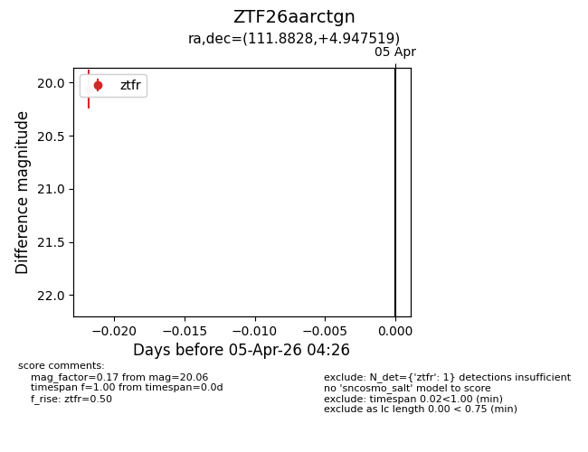
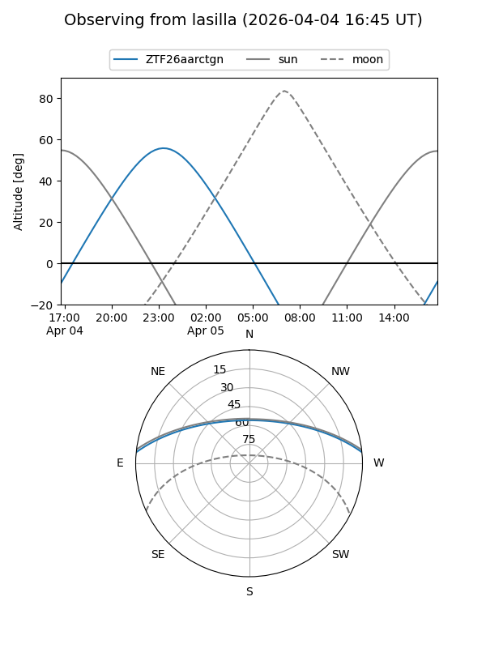
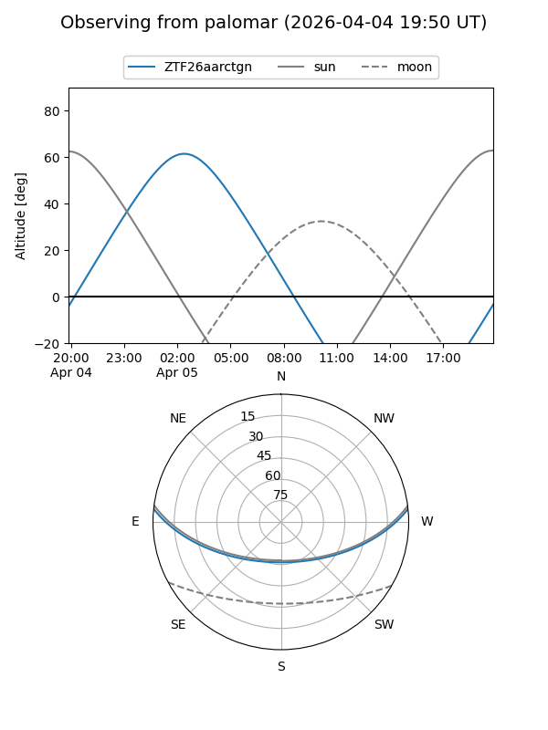

ZTF26aarctgn
Target ZTF26aarctgn at 2026-04-05 04:30
Aliases and brokers:
FINK: link
Lasair: link
ALeRCE: link
alt names
ZTF26aarctgn (ztf,fink_ztf)
Coordinates:
equatorial (ra, dec) = 111.8828,+4.94752
equatorial (HMS+DMS) = 07:27:31.86,+04:56:51.07
galactic (l, b) = (212.6112,+10.27585)
Flags:
Photometry:
last ztfr=20.06
1 ztfr detections
Lightcurve

Visibility


Additional plots